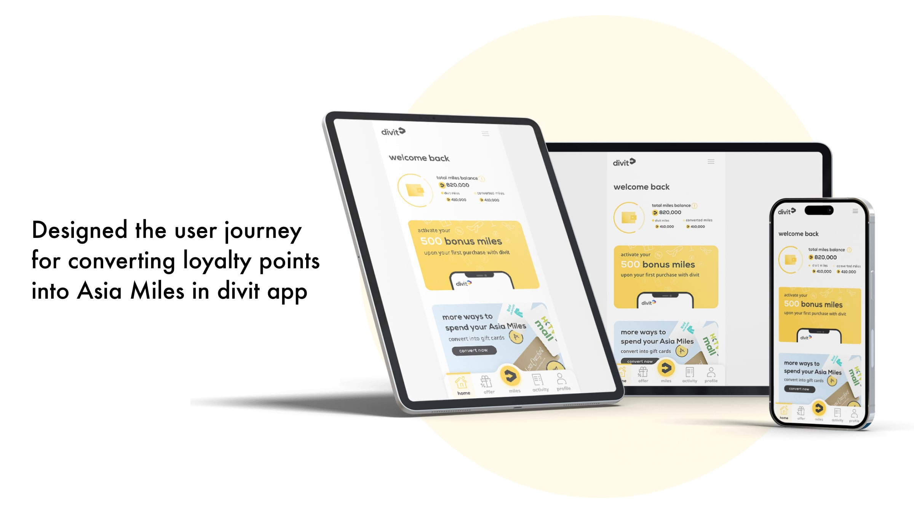
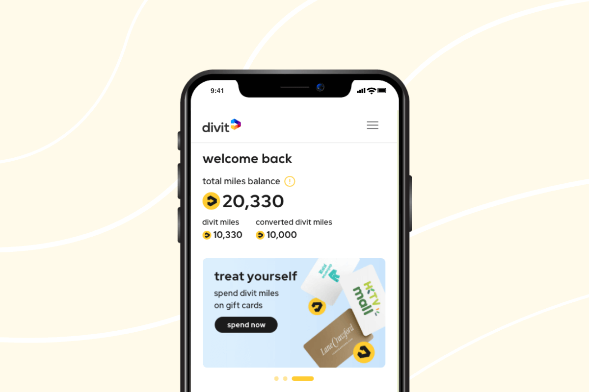

Removing the seams from miles conversion.
divit's value depended on turning everyday payments into rewards people could actually use. As the UX/UI Designer, I designed the in-app journey from account linking and recovery to conversion and trip goals — giving members a clear path from their balance to Asia Miles.
The problem
Loyalty value breaks down when balances, exchange terms and account linking are difficult to understand. For divit, the risk was not only drop-off at conversion: members had to distinguish divit miles from converted miles, connect the right account, recover from errors and still feel confident before committing.
How might we make a high-consequence rewards transfer feel transparent, reversible until confirmation and contained inside divit?
The process
Research & discovery
- Compared American Express, HSBC and Standard Chartered to see how established products explain linking and conversion
- Used Hotjar heatmaps to identify where existing journeys lost attention or created hesitation
- Traced the highest-risk moments across sign-up, account linking, amount selection, confirmation and recovery
Strategy
- Aligned the activation goal with a member need for control: always show the source balance, destination and result
- Prioritised one contained in-app journey and a clear explanation of the two mile types
Design
- Mapped new-member registration, Asia Miles linking, conversion and failure-recovery states
- Compared three wireframe directions and selected the structure that could scale across more states
- Built 50+ product states covering the core journey and edge cases, backed by a reusable component library
Testing & iteration
- Tested with five participants aged 23–48; average task completion was 6m 32s and satisfaction reached 95%
- Testing exposed confusion between "divit miles" and "converted miles"; clearer labels and a focused explanation resolved it
The solution
- One contained journey — Asia Miles account linking and conversion stay inside divit instead of breaking the flow across products
- Visible control before commitment — members see the source balance, choose an amount and review the converted result before confirming
- Value beyond the transaction — trip goals turn an abstract points balance into a useful destination and reason to return
Keeping rewards understandable before transfer.
Balance, destination and converted value remain visible across the journey, so a high-consequence action still feels controlled.


The outcomes
Member sign-ups after launch
Merchant sign-ups reported
Test satisfaction across five participants
Increase in reported marketing exposure